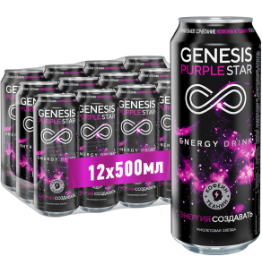

Для образовательного марафона мы отобрали четырёх популярных блогеров и сделали их менторами в своём направлении. Начиная с 10 июня, на протяжении двух недель блогеры проводят онлайн-интенсивы — мастер-классы в своих направлениях с последующими домашними заданиями. Задания публикуются ежедневно в течение первых 5 дней.
Основная борьба за главные призы — интенсивы от Британской Школы Дизайна — происходит в социальных сетях: участники проекта публикуют домашние задания на личных страничках. Участники должны расшарить свои работы в социальных сетях с указанными ниже хэштегами. Ну, а каждый 10-ый участник, опубликовавший свою работу получает приз — ящик энергетика Genesis.
Лучшие работы определяют популярные блогеры и эксперты проекта.
Уникальные призы

Продукция бренда Genesis
Четыре интенсива от Британской Школы Дизайна, которые вручаются победителю по каждому направлению. Победителя определят наши эксперты и блогеры.
Механика конкурса очень проста — для вас мы разработали два варианта призов. Чтобы получить каждый из них вам нужно будет выполнить несколько несложных заданий:
1. Просто делитесь своими работами в социальных сетях с указанными ниже хэштегами. Каждый десятый человек, принявший участие в этом конкурсе, получит целый ящик энергетика Genesis. Спешите, количество подарков ограничено! 2. Чтобы выиграть интенсив от Британской Школе Дизайна , вам нужно поделиться своими графическими (???) работами в Instagram, Facebook, Vkontakte со следующими хэштегами на выбор: #GenesisSkillChalenge #GenesisChalenge #КонкурсGenesis #СоздавайсGenesis #МарафонGenesis. Чем больше работ ты опубликуешь, тем больше у тебя будет шансов на победу.
Творческие задания
Музыка
Неделя #1
Гарри Топор
Музыкант / репер
Гарри Топор — один из главных представителей питерского рэп-андерграунда, известный своей эмоциональной и агрессивной читкой. Гарри Топор рубит правду сплеча, в текстах всегда оставаясь честным со своей аудиторией. Неоднократный победитель главного рэп-баттла страны — Vesus.
Гарри Топор — один из главных представителей питерского рэп-андерграунда, известный своей эмоциональной и агрессивной читкой. Гарри Топор рубит правду сплеча, в текстах всегда оставаясь честным со своей аудиторией. Неоднократный победитель главного рэп-баттла страны — Vesus.
Гарри Топор — один из главных представителей питерского рэп-андерграунда, известный своей эмоциональной и агрессивной читкой. Гарри Топор рубит правду сплеча, в текстах всегда оставаясь честным со своей аудиторией. Неоднократный победитель главного рэп-баттла страны — Vesus.
Гарри Топор — один из главных представителей питерского рэп-андерграунда, известный своей эмоциональной и агрессивной читкой. Гарри Топор рубит правду сплеча, в текстах всегда оставаясь честным со своей аудиторией. Неоднократный победитель главного рэп-баттла страны — Vesus.